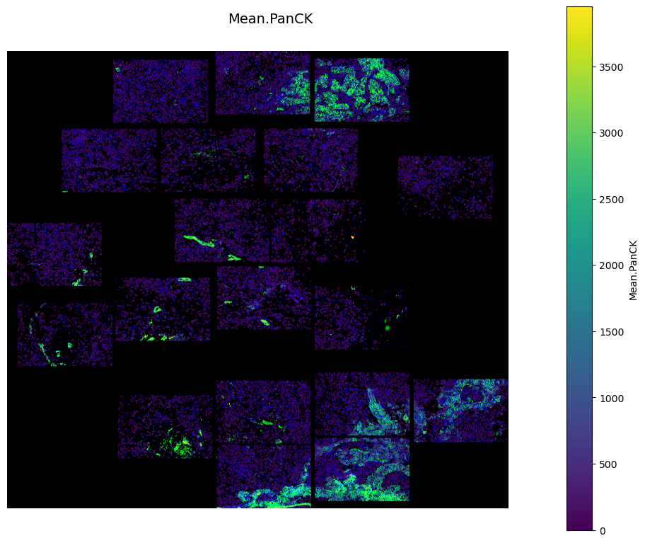
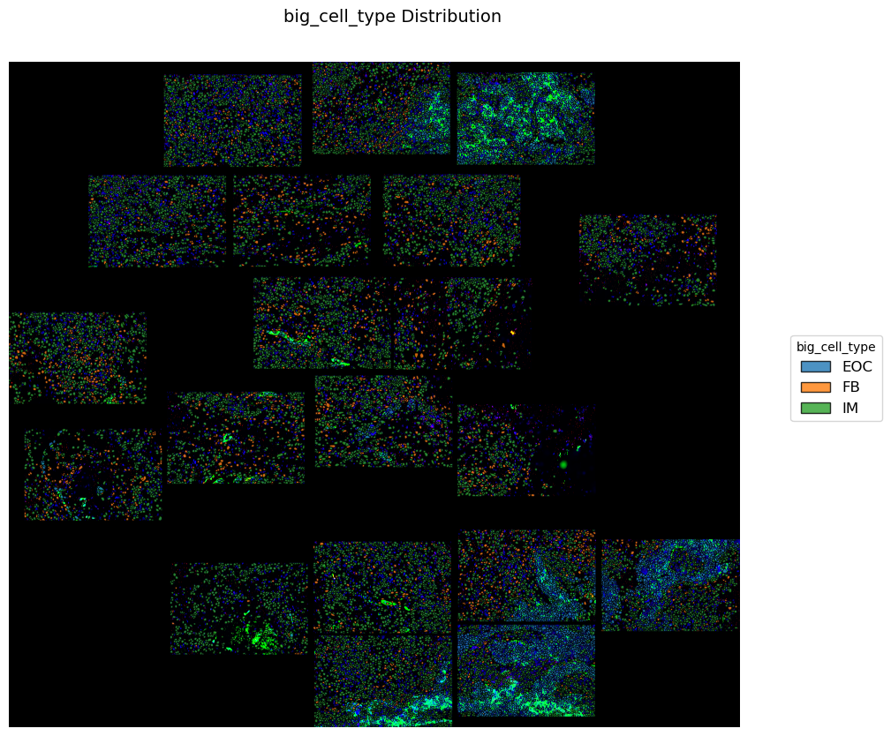
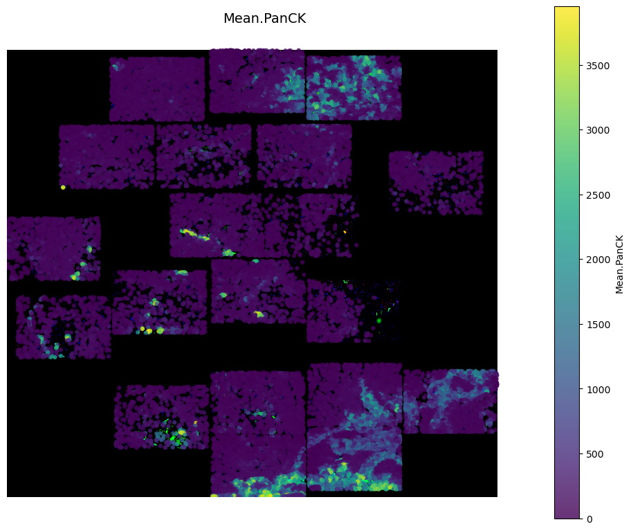
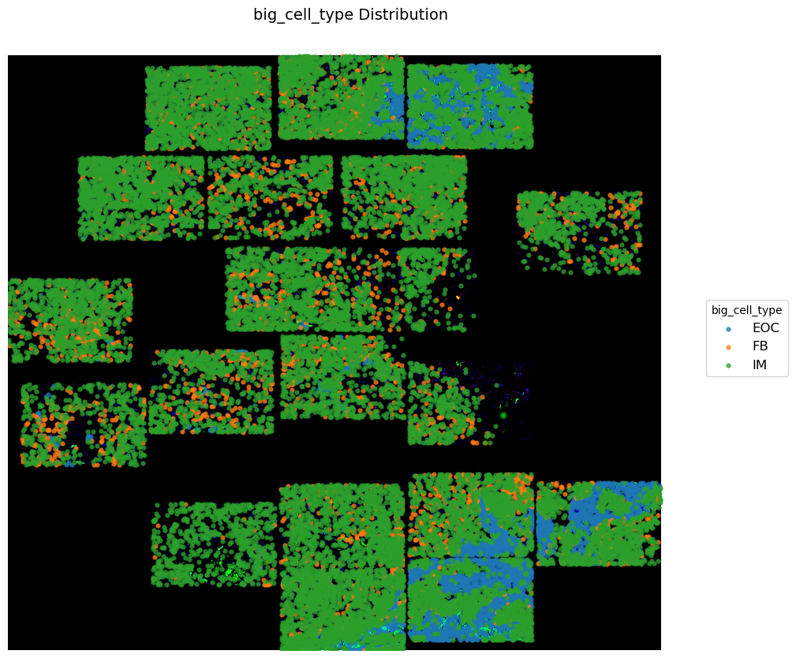
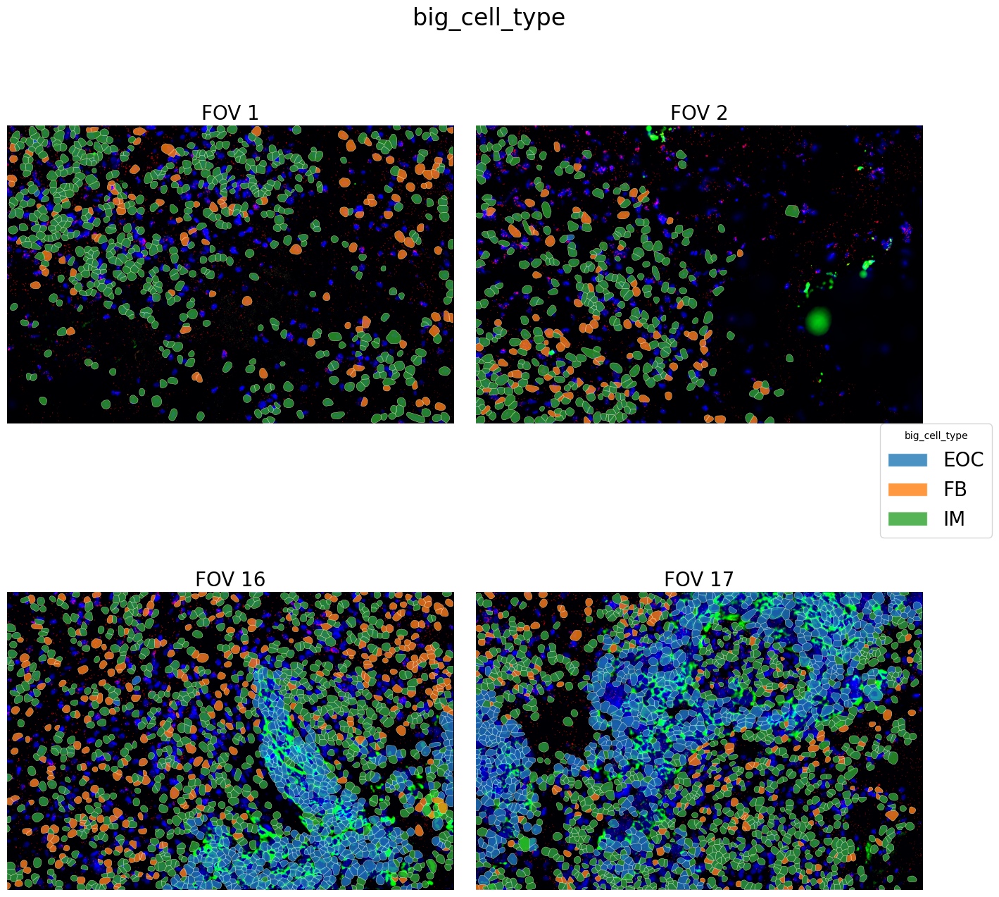
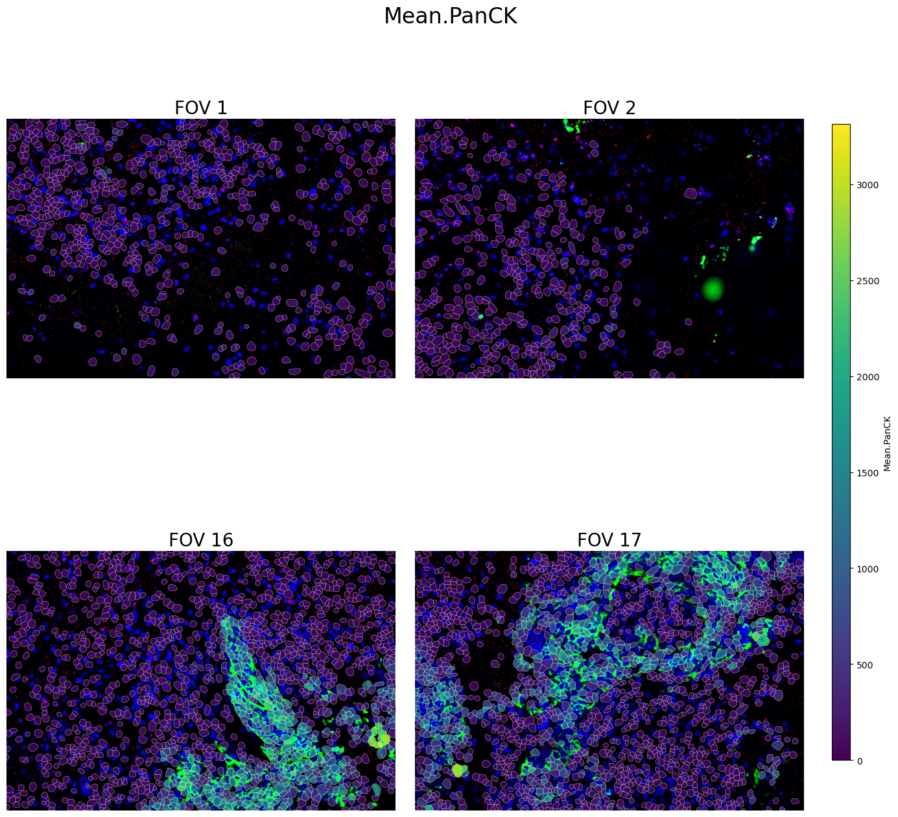
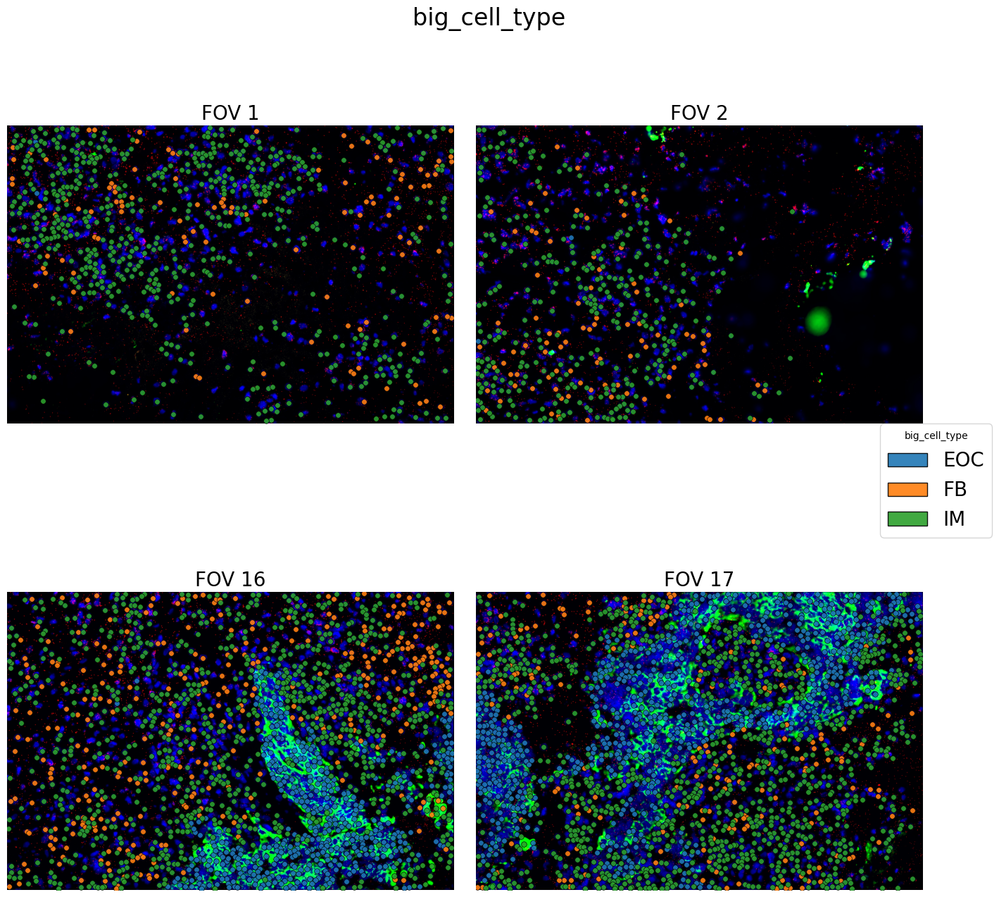
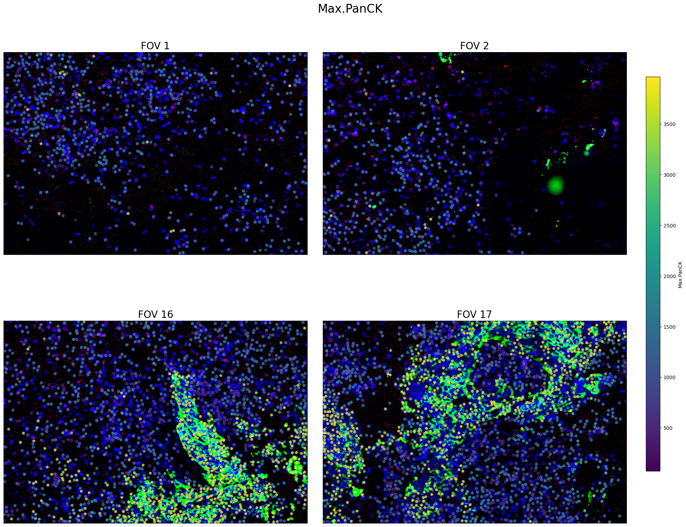

Basic Visualization for Polygons or Dots in Spatial Images/ Stitiched Images
[2]:
import os
import importlib
import logging
import pandas as pd
import scanpy as sc
import cv2
import numpy as np
from typing import Tuple, List, Dict, Optional, Union
import inspect
import sys
import SpatioloJI as SJ
Plot
- Set up directory paths for original data/saved data
- Load SpatioloJI object from pickle file
- Obtain stitiched image
- Plot polygons
- Categorical
- Continuous
- Plot dots
- Categorical
- Continuous
[ ]:
# load pickle file
data_read = './test_data/' # for raw data
data_save = './test_data/' # for processed data or intermediate result
analysis_save = './test_analysis/' # for plots
sp_ji = SJ.data.Spatioloji.from_pickle(data_save)
[4]:
sp_ji = SJ.pl.stitch_fov_images(
spatioloji_obj=sp_ji,
fov_ids=fov_id,
flip_vertical=True,
save_path=analysis_save+"stitched_fovs.png",
title="FOVs Stitched Image",
show_plot=False
)
Stitching 20 FOVs: [1, 2, 4, 5, 6, 7, 8, 9, 10, 11, 12, 13, 14, 15, 16, 17, 18, 19, 21, 22]
Detected FOV image dimensions: 5472 x 3648
Creating stitched image with dimensions: 29011 x 26415
Added FOV 1 at position (22633, 16716)
Added FOV 2 at position (17816, 9172)
Added FOV 4 at position (17794, 22344)
Added FOV 5 at position (12061, 22766)
Added FOV 6 at position (14844, 18300)
Added FOV 7 at position (6150, 22266)
Added FOV 8 at position (8911, 18300)
Added FOV 9 at position (3161, 18272)
Added FOV 10 at position (0, 12838)
Added FOV 11 at position (616, 8211)
Added FOV 12 at position (6411, 2883)
Added FOV 13 at position (6277, 9672)
Added FOV 14 at position (12155, 10322)
Added FOV 15 at position (12094, 3727)
Added FOV 16 at position (17838, 4200)
Added FOV 17 at position (23538, 3816)
Added FOV 18 at position (15288, 14205)
Added FOV 19 at position (9711, 14238)
Added FOV 21 at position (12133, 0)
Added FOV 22 at position (17816, 422)
Saved stitched image to ./test_analysis/stitched_fovs.png
Stitched image created successfully with 20 FOVs.
[6]:
SJ.pl.plot_global_polygon_by_features(
spatioloji_obj=sp_ji,
feature="Mean.PanCK", # features in adata.obs
background_img=True,
save_dir=analysis_save,
colormap="viridis",
alpha=0.8
)
Creating polygons for 25368 cells...
Saved figure to ./test_analysis/polygon_Mean.PanCK_global_with_bg.png

[6]:

[32]:
SJ.pl.plot_global_polygon_by_categorical(
spatioloji_obj=sp_ji,
feature="big_cell_type", # features in adata.obs
background_img=True,
save_dir=analysis_save,
alpha=0.8
)
/Users/gynecoloji/Library/CloudStorage/OneDrive-IndianaUniversity/IU/project/adventure/Python_workdirectory/package/CCCI/spatial_ccc/core/Plot_Spatial_Image.py:563: SettingWithCopyWarning:
A value is trying to be set on a copy of a slice from a DataFrame.
Try using .loc[row_indexer,col_indexer] = value instead
See the caveats in the documentation: https://pandas.pydata.org/pandas-docs/stable/user_guide/indexing.html#returning-a-view-versus-a-copy
feature_subset = spatioloji_obj.adata.obs[[feature]]
Creating polygons for 25368 cells in 3 categories...
Saved figure to ./test_analysis/polygon_big_cell_type_categorical_with_bg.png

[32]:
[26]:
SJ.pl.plot_global_dot_by_features(
spatioloji_obj=sp_ji,
feature="Mean.PanCK", # features in adata.obs
background_img=True,
save_dir=analysis_save,
colormap="viridis",
alpha=0.8
)
/Users/gynecoloji/Library/CloudStorage/OneDrive-IndianaUniversity/IU/project/adventure/Python_workdirectory/package/CCCI/spatial_ccc/core/Plot_Spatial_Image.py:564: SettingWithCopyWarning:
A value is trying to be set on a copy of a slice from a DataFrame.
Try using .loc[row_indexer,col_indexer] = value instead
See the caveats in the documentation: https://pandas.pydata.org/pandas-docs/stable/user_guide/indexing.html#returning-a-view-versus-a-copy
feature_subset['cell'] = spatioloji_obj.adata.obs['cell']
Creating scatter plot for 25368 cells...
Saved figure to ./test_analysis/global_dot_mean.panck_with_bg.png

[26]:
[29]:
SJ.pl.plot_global_dot_by_categorical(
spatioloji_obj=sp_ji,
feature="big_cell_type", # features in adata.obs
background_img=True,
save_dir=analysis_save,
alpha=0.8
)
/Users/gynecoloji/Library/CloudStorage/OneDrive-IndianaUniversity/IU/project/adventure/Python_workdirectory/package/CCCI/spatial_ccc/core/Plot_Spatial_Image.py:782: SettingWithCopyWarning:
A value is trying to be set on a copy of a slice from a DataFrame.
Try using .loc[row_indexer,col_indexer] = value instead
See the caveats in the documentation: https://pandas.pydata.org/pandas-docs/stable/user_guide/indexing.html#returning-a-view-versus-a-copy
grid_size = int(np.ceil(np.sqrt(n_plots)))
Saved figure to ./test_analysis/global_dot_big_cell_type_categorical_with_bg.png

[29]:
[38]:
SJ.pl.plot_local_polygon_by_categorical(
spatioloji_obj=sp_ji,
feature="big_cell_type",
fov_ids=['1', '2', '16', '17'], # Only these FOVs
background_img=True,
save_dir=analysis_save,
edge_color="white",
edge_width=0.3
)
/Users/gynecoloji/Library/CloudStorage/OneDrive-IndianaUniversity/IU/project/adventure/Python_workdirectory/package/CCCI/spatial_ccc/core/Plot_Spatial_Image.py:1325: SettingWithCopyWarning:
A value is trying to be set on a copy of a slice from a DataFrame.
Try using .loc[row_indexer,col_indexer] = value instead
See the caveats in the documentation: https://pandas.pydata.org/pandas-docs/stable/user_guide/indexing.html#returning-a-view-versus-a-copy
feature_subset['cell'] = spatioloji_obj.adata.obs_names
Saved figure to ./test_analysis/local_polygon_big_cell_type_categorical_with_bg.png

[38]:

[40]:
SJ.pl.plot_local_polygon_by_features(
spatioloji_obj=sp_ji,
feature="Mean.PanCK",
fov_ids=['1', '2', '16', '17'], # Only these FOVs
background_img=True,
save_dir=analysis_save,
colormap='viridis',
edge_color="white",
edge_width=0.3
)
/Users/gynecoloji/Library/CloudStorage/OneDrive-IndianaUniversity/IU/project/adventure/Python_workdirectory/package/CCCI/spatial_ccc/core/Plot_Spatial_Image.py:1657: SettingWithCopyWarning:
A value is trying to be set on a copy of a slice from a DataFrame.
Try using .loc[row_indexer,col_indexer] = value instead
See the caveats in the documentation: https://pandas.pydata.org/pandas-docs/stable/user_guide/indexing.html#returning-a-view-versus-a-copy
coords = group[['x_local_px', 'y_local_px']].values
/Users/gynecoloji/Library/CloudStorage/OneDrive-IndianaUniversity/IU/project/adventure/Python_workdirectory/package/CCCI/spatial_ccc/core/Plot_Spatial_Image.py:1789: UserWarning: This figure includes Axes that are not compatible with tight_layout, so results might be incorrect.
legend_ncol : int, optional
Saved figure to ./test_analysis/local_polygon_mean.panck_continuous_with_bg.png

[40]:
[42]:
SJ.pl.plot_local_dots_by_categorical(
spatioloji_obj=sp_ji,
feature="big_cell_type", # Column in adata.obs
fov_ids=["1", "2", "16", "17"], # Specific FOVs to plot
background_img=True, # Show FOV images in background
dot_size=30, # Make dots larger
alpha=0.9, # Make dots more opaque
grid_layout=(2, 2), # 2x2 grid of plots
save_dir=analysis_save, # Save to specific directory
dpi=300 # Higher resolution for publication
)
/Users/gynecoloji/Library/CloudStorage/OneDrive-IndianaUniversity/IU/project/adventure/Python_workdirectory/package/CCCI/spatial_ccc/core/Plot_Spatial_Image.py:1966: SettingWithCopyWarning:
A value is trying to be set on a copy of a slice from a DataFrame.
Try using .loc[row_indexer,col_indexer] = value instead
See the caveats in the documentation: https://pandas.pydata.org/pandas-docs/stable/user_guide/indexing.html#returning-a-view-versus-a-copy
Saved figure to ./test_analysis/local_dots_big_cell_type_categorical_with_bg.png

[42]:

[43]:
SJ.pl.plot_local_dots_by_features(
spatioloji_obj=sp_ji,
feature="Max.PanCK", # Numeric feature in adata.obs
fov_ids=["1", "2", "16","17"], # Selected FOVs only
colormap="viridis", # Different colormap
dot_size=30, # Force color scale range
figure_width=10, # Wider figures
figure_height=8, # Taller figures
edge_color="white", # White edge on dots
edge_width=0.2 # Thinner edges
)
/Users/gynecoloji/Library/CloudStorage/OneDrive-IndianaUniversity/IU/project/adventure/Python_workdirectory/package/CCCI/spatial_ccc/core/Plot_Spatial_Image.py:2279: SettingWithCopyWarning:
A value is trying to be set on a copy of a slice from a DataFrame.
Try using .loc[row_indexer,col_indexer] = value instead
See the caveats in the documentation: https://pandas.pydata.org/pandas-docs/stable/user_guide/indexing.html#returning-a-view-versus-a-copy
/Users/gynecoloji/Library/CloudStorage/OneDrive-IndianaUniversity/IU/project/adventure/Python_workdirectory/package/CCCI/spatial_ccc/core/Plot_Spatial_Image.py:2394: UserWarning: This figure includes Axes that are not compatible with tight_layout, so results might be incorrect.
Saved figure to ./local_dots_max.panck_continuous_with_bg.png

[43]: